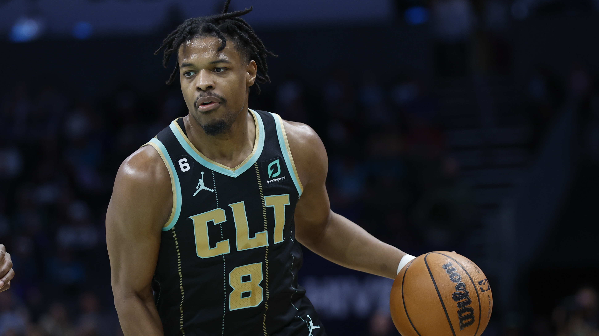

Наші Гравці
 Ройс О'Ніл
#00
Ройс О'Ніл
#00
 Дарік Вайтхед
#0
Дарік Вайтхед
#0
 Майкал Бріджес
#1
Майкал Бріджес
#1
 Кемерон Джонсон
#2
Кемерон Джонсон
#2
 Денніс Сміт молодший
#4
Денніс Сміт молодший
#4
 Даріус Бейзлі
#7
Даріус Бейзлі
#7
 Лонні Вокер IV
#8
Лонні Вокер IV
#8
 Трендон Ватфорд
#9
Трендон Ватфорд
#9
 Бен Сіммонс
#10
Бен Сіммонс
#10
 Армоні Брукс
#13
Армоні Брукс
#13
Позиція: Тяжкий форвард
Зріст: 6'6"(1.98 м)
Вага: 226 lbs(103 кг)
Дата народження: Червень 5, 1993
Країна: США
Вік: 30 років
Драфт: Не задрафтований
Останній відвіданий заклад: Університет Бейлора
Досвід у НБА: 6 років

Біографія
ПРОФЕСІЙНА КАР'ЄРА
Ройс О'Ніл був готовий грати за професійну команду у Литві, але він виділився у літній лізі 2017 року в Солт-Лейк Сіті та врешті-решт підписав частково гарантований контракт з командою "Джаз". Він зіграв у 151 регулярному сезонному матчі з "Джаз" з 2017 по 2019 рік. У січні 2020 року О'Ніл підписав чотирирічний контрактний продовження з "Джаз".
ПЕРЕД НБА
Ройс О'Ніл, форвард з Кіліна, Техас, зрістом 6 футів 4 дюйми, подорожував по всьому світу, перш ніж потрапити в НБА. О'Ніл грав в коледжі в Університеті Денвера, де його назвали третьою командою Вест-коуст-конференції після його другого сезону, протягом двох років, перш ніж перейти до Бейлора на два останні сезони. Після завершення останнього року в університеті його обрали до Другої академічної команди Великої Дванадцятки (Big 12). Після того, як його не вибрали під час Драфту НБА 2015 року, О'Ніл почав свою професійну кар'єру в Німеччині за команду MHP Різен Людвігсбург. Він грав за літню лігу Голден Стейт у 2016 році, а потім підписав контракт із іспанським клубом Herbalife Гран-Канарія на сезон 2016-17.
Статистика кар'єри
| PPG: | 6.6 |
| APG: | 2.4 |
| RPG: | 4.8 |
| BLK: | 0.4 |
| STL: | 0.8 |
| MIN: | 26.7 |
Досягнення
- Переможець Іспанського Суперкубка (2016)
- Третя команда за версією WAC (2013)
Яскраві моменти гравця
Соціальні мережі
Позиція: Форвард
Зріст: 6'7" (2.01 м)
Вага: 220lb (100 кг)
Дата народження: Серпень 1, 2004
Країна: США
Вік: 19 років
Драфт: 2023 Раунд 1 Пік 22
Останній відвіданий заклад: Університет Дюка
Досвід: Новачок

Біографія
КАР'ЄРА В ШКОЛІ
Уайтхед навчався в Монтверд Академі в Монтверд, Флорида. Уайтхед виграв нагороду Нейсміта для найкращого підготовчого гравця року в 2022 році у своєму старшому році. Його обрали для участі в Макдональдс Ол-Американ Бойс Гейм 2022 року. Уайтхед був названий МВП гри Макдональдс Ол-Американ, де він набрав 13 очок, сім підбирань і сім асистів.
ВИБІР УНІВЕРСИТЕТУ
Вайтхед був консенсусним рекрутом п'ятої зірки та одним із найкращих гравців класу 2022 року, згідно з провідними службами рекрутингу. 1 серпня 2021 року він вирішив грати в університетському баскетболі за команду Дюка, обираючи її перед пропозиціями від Флорида Стейт, Канзасу та НБА G Ліги.
Статистика кар'єри
| PPG: | - |
| APG: | - |
| RPG: | - |
| BLK: | - |
| STL: | - |
| MIN: | - |
Досягнення
- Містер Баскетбол США (2022)
- Найсміта Підготовчий Гравець Року (2022)
- МВП Макдональдс Ол-Американ Гейм (2022)
- Класичний Турнір Бренду Джордан (2022)
- Nike Hoop Summit (2022)
Яскраві моменти гравця
Соціальні мережі
Позиція: Легкий форвард
Зріст: 6'6"(1.98 м)
Вага: 209lb (95кг)
Дата народження: Серпень 30, 1996
Країна: США
Вік: 26 років
Драфт: 2018 Раунд 1 Пік 10
Останній відвіданий заклад: Університет Вілланова
Досвід у НБА: 5 років

Біографія
КАР'ЄРА В Університеті
Перший рік
У перший рік університету, Бріджес був залишений на черзі та допомагав в складанні аналізів гравців. У свій перший рік у Вілланові, він виступив у всіх 40 матчах за Wildcats. Він зазначив, що йому довелося багато займатися важкими вагами і змінювати свій триочковий кидок. Він мав ключову роль, виходячи з лави запасних, у турнірі NCAA 2016 року, де він забив 11 очок у півфіналі проти Oklahoma Sooners. Бріджес разом з командою переміг у НКАА чемпіонаті, вперше з 1985 року. У своєму першому році він середньо набирав 6.4 очка, 3.2 підбирання та 1.1 перехоплення за гру. "Він прийшов як феномен шкільного баскетболу, як всі вони, тому я дуже гордий за те, як він розкриває свою гру оборонно", сказав тренер Джей Райт.Другий рік
Бріджес у 2017 році На початку сезону 2016–17, Бріджес планував виступати як шостий гравець команди, але почав починати всі матчі після того, як Філ Бут отримав травму коліна в листопаді. Як студент другого курсу, Джо Джуліано з The Philadelphia Inquirer писав, "Якщо є така річ, як гравець з п'ятьма навичками в коледжовому баскетболі, то Майкал Бріджес - модель". Його характеризували як довгопоступового форварда, який може забивати та грати відмінну оборону, і він часто варварів опонентів, кращих гравців команди супротивника. У турнірі NCAA він забив 13 очок, допомігши Вілланові перемогти Mount St. Mary's у першому раунді. Бріджес середньо набирав 9.8 очка і 4.6 підбирання за гру, при відсотку реалізації кидків з гри 54 відсотки та 39 відсотків триочкових спроб. Він покращив свій показник очок, коли сезон розвивався, середньо набиравши 12.3 очка в останніх 12 іграх регулярного сезону. Разом із Кайрі Томасом з Creighton та командним партнером Джошем Хартом, Бріджес був одним із трьох нагороджених гравців року Big East з оборони, посівши третє місце в конференції за перехопленнями з показником 1.9 за гру.ПРОФЕСІЙНА КАР'ЄРА
Фінікс Санз (2018–2023)
Бріджес був обраний десятим загальним вибором своєї рідної команди Філадельфія 76ерс на драфті НБА 2018 року і пізніше був обміняний на Фінікс Санз у обмін на права на вибір Зере Сміта та вибір першого раунду 2021 року. Бріджес приєднався до Санз для літньої ліги НБА 2018 року. Він підписав річний контракт за масштабом новачка на 4 роки на суму 17,6 мільйона доларів із Санз 6 липня 2018 року. 6 жовтня було оголошено, що Бріджес пропустить решту підготовчого періоду через травму ліктя.
Бріджес зіграв у відкритому матчі Санз у регулярному сезоні, щоб зробити свій професійний дебют у величезній перемозі 121–100 над Даллас Маверікс 17 жовтня 2018 року. Трохи пізніше він записав свої перші очки, підбирання та асисти в своєму професійному виступі, набравши 10 очок, 4 підбирання, 2 асисти та 2 перехоплення в більш ніж переконливій поразці від Денвер Наггетс. 14 листопада він вперше в кар'єрі вийшов у стартовому складі на заміну Тревору Аризі, набравши вісім очок за 25 хвилин у перемозі 116–96 над Сан-Антоніо Сперс. 2 лютого 2019 року Бріджес встановив свій рекорд сезону 20 очками в поразці 118–112 від Атланта Хокс. 25 лютого Бріджес встановив свій рекорд сезону 8 асистами, допомігши Санз зупинити серію з 17 поразок у перемозі 124–121 над Маямі Хіт. З 22 січня до 6 березня Бріджес отримував щонайменше одне перехоплення в кожній грі, зіграній протягом цього часу. Він став першим новачком, здобувши у середньому по перехопленню за гру протягом 20 матчів. Це також було другим найбільшим періодом для новачка в історії команди, випередивши лише Рона Лі. В кінці сезону Бріджес став єдиним гравцем Санз, який зіграв у всіх 82 матчах регулярного сезону.
19 листопада 2019 року Бріджес вирівняв свій кар'єрний рекорд 20 очками в поразці 120–116 від Сакраменто Кінгз. 14 грудня він здобув тодішній кар'єрний рекорд з 10 підбирань у своєму першому старті сезону 2019–20 в НБА в поразці 121–119 після подовження від Сан-Антоніо Сперс у Мехіко. Бріджес також вирівняв свій тодішній кар'єрний рекорд з 10 підбирань два дні поспіль у поразці 111–110 від Портленд Трейл Блейзерс. 18 січня Бріджес забив сезонний рекорд 26 очків при 6–8 підбираннях трьохочковим кидком у перемозі 123–119 над Бостон Селтікс. 8 березня Бріджес здобув свій перший дабл-дабл з 21 очком, відповідно до свого тодішнього рекорду з 10 підбирань у перемозі 140–131 над Мілуокі Бакс. У бульбашці НБА 2020 року Бріджес вийшов у стартовому складі в усіх восьми іграх на позиції форварда для Санз.
9 січня 2021 року Бріджес встановив новий кар'єрний рекорд з 34 очками у перемозі 125–117 від Індіана Пейсерс. Він також допоміг Санз почати сезон з рекордом 7–3, найкращим результатом за перші 10 матчів сезону з 2009 року. 13 травня Бріджес записав дабл-дабл з 21 очком і рекордними 11 підбираннями у перемозі 118–117 над Портленд Трейл Блейзерс. Під час другої гри фіналу НБА 2021 року Бріджес набрав 27 очок у перемозі 118–108, даруючи Санзу перевагу 2–0 у серії. Однак Санз потім програли фінали в шести іграх Мілуокі Бакс.
17 жовтня 2021 року Бріджес і Санз погодилися на продовження контракту новачка на 4 роки на суму 90 мільйонів доларів. Санз завершили регулярний сезон з найкращим загальним рекордом у лізі 64–18. Бріджес отримав універсальні похвали від гравців, тренерів, фанатів та журналістів за його захист, зайнявши друге місце у голосуванні за найкращого захисника року і був обраний у свою першу збірну НБА захисту. 26 квітня 2022 року Бріджес встановив рекорд своєї кар'єри у плей-офф, набравши 31 очко, включаючи п'ять підбирань і чотири блоки в перемозі 112–97 над Новим Орлеан Пеліканз. У півфіналах Західної конференції Санз вийшли вперед 2–0 у серії проти Даллас Маверікс, перш ніж програти у семи іграх.
9 листопада 2022 року Бріджес набрав рекордний результат сезону у 31 очко разом з дев'ятьма підбираннями, п'ятьма асистами і чотирма перехопленнями у перемозі 129–117 над Міннесота Тімбервулвз. 16 листопада він записав майже трипл-дабл із 23 очками, 9 підбираннями та рекордними 9 асистами у перемозі 130–119 над регуючими чемпіонами Голден Стейт Ворріорз.
Бруклін Нетс (2023–до тепер)
9 лютого 2023 року Санз обмінили Бріджеса на Бруклін Нетс разом з Камероном Джонсоном, Джеє Краудером, чотирма незахищеними виборами першого раунду та обміном виборами першого раунду 2028 року на Кевіна Дюранта та Т. Дж. Воррена. При вступі до Нетсу йому було дано прізвисько Бруклін Бріджес, гра слів на Бруклінському мосту. 11 лютого Бріджес зробив свій дебют за Нетс, набравши 23 очки, 6 підбирань і 2 перехоплення в поразці 101–98 від Філадельфія 76ерс. 15 лютого Бріджес забив кар'єрний рекорд 45 очок у перемозі 116–105 над Маямі Хіт. 26 березня Бріджес набрав 44 очки в поразці 119–106 від Орландо Меджік. 3 квітня Бріджес виграв свою першу нагороду НБА Гравець тижня в своїй кар'єрі. Він провів Нетс до бездоганного тижня 3–0 з середніми показниками 33 очки, 5,7 підбирання, 3,7 асисти та 1,3 перехоплення в перемогах над Рокетс, Орландо та Язом. Він зробив третій у своїй кар'єрі матч з 40 і більше очками (всі після обміну в Нетс) у перемозі над Атлантою, забивши 42 очки. 9 квітня Бріджес провів свій 83-й матч сезону, ставши 42-м гравцем в історії НБА, який зіграв 83 або більше матчів протягом регулярного сезону, і першим після Джоша Сміта в сезоні 2014–15. На момент завершення сезону 2022–23 року Бріджес все ще держить активний рекорд за найбільшою кількістю поспіль зіграних матчів - 392, що робить його нинішнім залізним чоловіком.
Статистика кар'єри
| PPG: | 13.1 |
| APG: | 2.3 |
| RPG: | 4 |
| BLK: | 0.6 |
| STL: | 1.3 |
| MIN: | 32.2 |
Досягнення
- NBA All-Defensive First Team (2022)
- 2× чемпіон НКАА (2016, 2018)
- Третя команда All-American – AP, SN, NABC (2018)
- Премія Юліуса Ервінга (2018)
- Перша команда Біг Іст (2018)
- Друга команда Біг Іст (2017)
- Співзахисник року Біг Іст (2017)
- МВП турніру Біг Іст (2018)
Яскраві моменти гравця
Соціальні мережі
Позиція: Форвард
Зріст: 6'8" (2.03 м)
Вага: 210lb (95 кг)
Дата народження: Березень 3, 1996
Країна: США
Вік: 27 років
Драфт: 2019 Раунд 1 Пік 11
Останній відвіданий заклад: Університет Північної Кароліни
Досвід: 4 років

Біографія
КАР'ЄРА В УНІВЕРСИТЕТІ
Піттсбург (2014–2017)
Джонсон отримав травму плеча в самому початку свого першого року в Піттсбурзі і отримав можливість ретельно підготуватися до реабілітації під час цього сезону, щоб відновитися після травми. Він використовувався як запасний гравець протягом свого першого року як червоний фрешмен. У своєму червоному другому році в Піттсбурзі Джонсон в середньому набирав 11,9 очка за гру та влучав у 41,5% своїх триочкових кидків. Джонсон закінчив Піттсбурзький університет за три роки зі ступенем у галузі комунікацій. Він скористався правилом перекладу для випускників та перейшов до Північної Кароліни, не пропустивши жодного року. Спочатку Університет Піттсбурга відмовив у його відпуску до їхнього суперника в конференції - "Tar Heels", але врешті-решт погодився. Він зазначив невизначеність у тренерському штабі та поганий рекорд як фактори, що вплинули на його рішення про перехід.
Північна Кароліна (2017–2019)
>15 листопада 2017 року, за п'ять днів до першої гри своєї команди у сезоні, Джонсон переніс операцію на зшиття розірваного менискусу. Джонсон пропустив десять ігор. Незважаючи на травму, Джонсон фінішував третім у команді за кількістю очок, набравши 12,4 очка за гру, а також брав у середньому 4,7 підбирання за гру у своєму червоному третьому році. Джонсон забив кар'єрні 32 очки проти Клемсона. Після сезону Джонсон переніс артроскопічну операцію на стегно та оголосив своє намір повернутися до Північної Кароліни на свій старший рік.
Старший рік Джонсона виявився найстатистично найуспішнішою кампанією. Без обмежень через травму, Джонсон став найкращим бомбардиром "Тар Хілз" з 16,9 очками за гру та у середньому набирав 5,8 підбирань та 2,4 асистентських передачі. Джонсон кидав із польоту на 50,6% та 45,7% відповідно від трьохочкової лінії, що змусило деяких коментаторів називати Джонсона "найкращим кидальником в драфті". У Джонсона було кілька помітних виступів під час його старшого року. Граючи проти Уейк Форест у Вінстон-Сейлемі, Джонсон забивав 79% кидків у грі та виконавав свої шість перших триочкових спроб, завершивши гру з 27 очками в перемозі 95–57 над "Demon Deacons". Проти суперника - Дюка, в Камерон Індор Стейдіум, Джонсон завершив гру з 26 очками в перемозі 88–72 над "Blue Devils", які тоді були першою командою у країні. Проти Клемсона в "Littlejohn Coliseum", Джонсон відзначився шістьма триочковими кидками та 19 очками у перемозі з різницею у два очки. Після завершення конференційного турніру Джонсона було включено до першої команди All-ACC.
ПРОФЕСІЙНА КАР'ЄРА
Фінікс Санс (2019–2023)
20 червня 2019 року "Міннесота Тімбервулвз" вибрали Джонсона одинадцятим загальним вибором на драфті НБА 2019 року, а потім відразу обміняли його та Даріо Шаріча на "Фінікс Санс" за Джаретта Калвера, шостий вибір драфту. Торгівля була офіційно завершена 6 липня, пізніше "Санс" оголосили, що підписали Джонсона цього ж дня. 26 жовтня 2019 року Джонсон зробив свій дебют в НБА, виходячи з лави у перемозі 130–122 над "Лос-Анджелес Кліпперс". 19 листопада він набрав сезонний рекорд 18 очок у поразці 120–116 від "Сакраменто Кінгз". Потім Джонсон вирівняв свій сезонний рекорд 5 грудня у перемозі 139–132 після подовження над "Нью-Орлеан Пеліканс".
Джонсон вперше виступив у стартовому складі команди 10 лютого 2020 року проти "Лос-Анджелес Лейкерс". 3 березня 2020 року Джонсон встановив новий сезонний рекорд - 21 очко на своєму 24-му дню народження в поразці 123–114 від захисника чемпіонського титулу "Торонто Репторс". Після того, як спочатку був відсутній у більшості березня через хворобу, Джонсон повернувся до гри як стартовий гравець 31 липня, набравши 12 очок у перемозі 125–112 над "Вашингтон Візардз". Через два дні Джонсон вперше в своїй професійній кар'єрі здобув подвійний дабл з 19 очками та сезонним рекордом 12 підбирань у перемозі 117–115 над "Даллас Маверікс". Він пізніше зареєстрував свій другий подвійний дабл в розіграші свого року з 12 підбираннями та 14 набраними очками 6 серпня у перемозі 114–99 над "Індіана Пейсерс". Через два дні Джонсон побив рекорд франшизи, раніше встановлений Веслі Персоном, для найшвидшого гравця, який набрав щонайменше 100 трьохочкових кидків, у перемозі 119–112 над "Маямі Хіт", досягнувши цього за лише 54 зіграні ігри. З Джонсоном у стартовому складі "Фінікс" мали 8–0 рекорд у 2020 році в "NBA Bubble" станом на 13 серпня, вперше з переможною серією принаймні 7 ігор з березня 2010 року.
27 грудня 2020 року Джонсон вирівняв свій тодішній кар'єрний рекорд у 21 очко з лави у перемозі 116–100 над "Сакраменто Кінгз". Джонсон допоміг "Санс" потрапити до фіналу НБА 2021 року, але "Санс" програли серію в 6 іграх "Мілуокі Бакс".
4 березня 2022 року Джонсон встановив свій кар'єрний рекорд - 38 очок з дев'ятьма трьохочковими кидками та переможним трьохочковим кидком за секунду до завершення гри у перемозі 115–114 над "Нью-Йорк Нікс". Він посів третє місце в голосуванні за НБА Шостий Гравець Року, поступившись переможцю Тайлеру Герро та Кевіну Лаву.
На початку сезону 2022–23 Джонсона було призначено стартовим силовим форвардом для "Санс" головним тренером Монті Вільямсом. 8 листопада 2022 року Джонсон пройшов операцію з видалення частини меніскуса у правому коліні та був відсторонений принаймні на один-два місяці.
Бруклін Нетс (2023)
9 лютого 2023 року "Санс" обміняли Джонсона на "Бруклін Нетс" разом з Мікалом Бриджесом, Дже Кроудером, чотирма неохороненими виборами першого раунду та обміном першого раунду 2028 року, в обмін на Кевіна Дюранта та Т. Дж. Уоррена. Джонсон зробив свій дебют за "Нетс" через два дні, набравши 12 очок, сім підбирань, сім асистів та три відбори у поразці 101–98 від "Філадельфія 76ерс".6 липня 2023 року Джонсон підписав новий контракт з "Нетс".
Статистика кар'єри
| PPG: | 11.3 |
| APG: | 1.5 |
| RPG: | 3.8 |
| BLK: | 0.3 |
| STL: | 0.8 |
| MIN: | 25.0 |
Досягнення
- Перший склад All-ACC (2019)
Яскраві моменти гравця
Соціальні мережі
Позиція: Розігруючий
Зріст: 6'2" (1.88 м)
Вага: 205lb (93 кг)
Дата народження: Листопад 25, 1997
Країна: США
Вік: 25 років
Драфт: 2017 Раунд 1 Пік 9
Останній відвіданий заклад: Університет Штату Північної Кароліни
Досвід: 6 років
Біографія
ПРОФЕСІЙНА КАР'ЄРА
Dennis Smith Jr. грав у коледжному баскетболі за Університет Північної Кароліни (2016–2017), де він отримав звання Новачка року Атлантичної Коледжійської Конференції (ACC), перш ніж бути вибраним дев'ятим загальним вибором командою Даллас Маверікс на Драфті НБА 2017 року. У свій новачковий сезон Сміт посів третє місце серед новачків за результативними передачами, п'яте місце за набраними очками, шосте місце за перехопленнями та сьоме місце за часом на майданчику. Він представляв збірну США на Молодіжному матчі "Mtn Dew Kickstart Rising Stars" 2018 року та був визнаний членом другого складу НБА за сезон 2017-2018 років серед новачків.
Статистика кар'єри
| PPG: | 10.3 |
| APG: | 4.4 |
| RPG: | 3 |
| BLK: | 0.4 |
| STL: | 1.1 |
| MIN: | 24.2 |
Досягнення
- Другий склад НБА серед новачків (2018)
- Новачок року Атлантичної Коледжійської Конференції (2017)
- Другий склад Команди Всіх Зірок Атлантичної Коледжійської Конференції (2017)
- Команда найкращих першокурсників Атлантичної Коледжійської Конференції (2017)
Яскраві моменти гравця
Соціальні мережі
Позиція: Форвард
Зріст: 6'9" (2.06 м)
Вага: 216lb (98 кг)
Дата народження: Червень 12, 2000
Країна: США
Вік: 23 років
Драфт: 2019 Раунд 1 Пік 23
Останній відвіданий заклад: Середня школа Принстон (Огайо)
Досвід: 4 років

Біографія
ПРОФЕСІЙНА КАР'ЄРА
Зіграв за молодіжну національну збірну США на Nike Hoop Summit 2018. Закінчив гру з 11 очками та семи підбираннями на McDonald's All-American 2018. Загалом набрав 12 очок та дев'ять підбирань на Jordan Brand Classic 2018. Зрештою вирішив присвятити сезон 2018-19 тренуванням для підготовки до НБА Драфту 2019 року. Протягом трьох місяців 2019 року проходив стажування в New Balance після підписання угоди про спонсорську підтримку з цим брендом наприкінці 2018 року.
ПЕРЕД НБА
Як сеніор середньої школи Принстон у місті Цинциннаті, Огайо, він взяв участь у 25 матчах і мав середні показники 15,4 очка, 10,3 підбирання, 3,9 асисти, 1,4 перехоплення та 2,0 блок-шота за гру, при точності кидків з поля 51,5 відсотка. Він очолив свою команду до сезону з рекордом 23 перемог і 4 поразок. Відібраний до першої збірної Дівізіону I Огайо та до першої збірної All-Ohio за версією USA TODAY. Рейтингований як дев'ятий найкращий перспективний гравець у рекрутинговому класі 2018 року за версією ESPN.
ПРО ОСОБИСТЕ ЖИТТЯ
Улюблений фільм — "Зелена Книга", а улюблений телешоу — "Мартін". З задоволенням слухає музику гурту Earth, Wind & Fire. Його улюблена спортивна команда поза НБА — "Хьюстон Тексанс". Улюблена пісня для підготовки до гри — "Sweet Love" від Аніти Бейкер. З задоволенням дивиться передачі на HGTV та вважає декорування інтер'єру своїм прихованим талантом.
Статистика кар'єри
| PPG: | 9.1 |
| APG: | 1.2 |
| RPG: | 5.3 |
| BLK: | 0.7 |
| STL: | 0.6 |
| MIN: | 23.6 |
Досягнення
- МакДональдс Алл-Американ (2018)
Яскраві моменти гравця
Соціальні мережі
Позиція: Захисник - Форвард
Зріст: 6'4" (1.93 м)
Вага: 204lb (93 кг)
Дата народження: Грудень 14, 1998
Країна: США
Вік: 24 років
Драфт: 2018 Раунд 1 Пік 18
Останній відвіданий заклад: Університет Маямі
Досвід: 5 років

Біографія
ПРОФЕСІЙНА КАР'ЄРА
З'явився на паркеті у 208 матчах НБА (56 у старті) за "Сперс", з середніми показниками 9,4 очка, 2,4 підбору та 1,6 передачі в 20,4 хвилини на гру ... Застрілявся на 34,3 відсотка (257-749) з трьохочкового діапазону ... Забивав двозначну кількість очок 95 разів, у тому числі 21 матч із 20+ очками та два матчі із 30+ очками ... Плей-оф: З'явився у шести іграх за "Сан-Антоніо", з середніми показниками 1,0 очка в 3,5 хвилини ... НБА G Ліга: З'явився у 29 матчах (28 у старті) за "Остін Сперс", середні показники - 16,6 очка, 2,9 підбору, 1,8 передачі та 1,2 відібраної м'яча в 27,3 хвилини на гру ... Застрілявся з трьохочкового діапазону на 35,8 відсотка (34-95) ... Забив двозначну кількість очок у 25 матчах, у тому числі 12 матчів із 20+ очками та одному матчі із 30+ очками ... Кар'єрні транзакції: Вибраний "Сан-Антоніо Сперс" під 18-м номером в загальному відборі на Драфті НБА 2018 року ... Підписав контракт з "Сперс" 11 липня 2018 року ... Підписав контракт з "Лос-Анджелес Лейкерс" 6 липня 2022 року.
ПЕРЕД НБА
2017-18 (Маямі (Флорида)): Відзначений як гравець команди ACC All-Freshman ... Вибраний до команди All-ACC Academic ... Двічі був призначений гравцем тижня ACC Rookie ... З'явився на паркеті у 32 матчах (18 у старті), з середніми показниками 11,5 очка, 2,6 підбору та 1,9 передачі в 27,8 хвилини на гру ... Став першим фрешменом, який очолив "Маямі" за показником очок з моменту Даріуса Райса у 2001 році ... Забив двозначну кількість очок 18 разів, у тому числі три матчі із 20+ очками ... Забив сезонний максимум 26 очок, здійснив сім підборів та дві передачі 5 грудня проти Бостонського університету ... Завершив матч із 10 очками, двома підборами та п'ятьма передачами у своєму дебюті у вищому навчальному закладі 10 листопада проти Гарднер-Вебба.
ПРО ОСОБИСТЕ ЖИТТЯ
Син Лонні Вокер III та Таміки Уолл ... Був названий Макдональдс Алл-Американцем у 2017 році ... У своєму останньому році навчання в Редінг Хай Скул, очолив команду та привів її до першого чемпіонства штату Пенсильванія відзначеного номером 61 у високій школі ... Покинув Редінг Хай Скул як найкращий бомбардир в історії програми.
Статистика кар'єри
| PPG: | 9.9 |
| APG: | 1.5 |
| RPG: | 2.3 |
| BLK: | 0.3 |
| STL: | 0.5 |
| MIN: | 21.0 |
Досягнення
- Команда ACC All-Freshman (2018)
- Макдональдс Алл-Американ (2017)
- Містер Баскетбол Пенсильванії (2017)
Яскраві моменти гравця
Соціальні мережі
Позиція: Форвард
Зріст: 6'8" (2.03 м)
Вага: 237lb (108 кг)
Дата народження: Листопад 9, 2000
Країна: США
Вік: 22 років
Драфт: Незадрафтований
Останній відвіданий заклад: Луїзіанський державний університет
Досвід: 2 роки

Біографія
ПРОФЕСІЙНА КАР'ЄРА
Portland Trail Blazers (2021–2023): Після того, як його не вибрали на Драфті НБА 2021 року, Вотфорд підписав двосторонній контракт з "Портленд Трейл Блейзерс" 3 серпня 2021 року. Його контракт був перетворений на стандартний 21 лютого 2022 року. 12 березня він забив сезонний максимум у 27 очок, а також здійснив шість підборів, у перемозі з рахунком 127:118 над "Вашингтон Візардс". 17 липня 2022 року Вотфорд набрав 19 очок, сім підборів, дві передачі, три відібрані м'ячі та один блок, щоб привести "Блейзерс" до перемоги з рахунком 85:77 над "Нью-Йорк Нікс" у фінальному матчі Літньої ліги НБА 2022 року. Пізніше його було названо MVP фінального матчу Літньої ліги. Вотфорд також був включений до Другої збірної Літньої ліги НБА. 30 червня 2023 року Вотфорд був звільнений "Трейл Блейзерс". Brooklyn Nets (з 2023 року): 3 серпня 2023 року Вотфорд підписав контракт з "Бруклін Нетс".
ПЕРЕД НБА
У своєму дебютному матчі за "LSU", перемога з рахунком 88:79 над "Боулінг Грін", Вотфорд забив 10 очок. Він здобув свій перший подвійний дабл в коледжі 19 листопада 2019 року, забивши 12 очок і здійснивши 12 підборів у перемозі "LSU" з рахунком 77:50 над "UMBC". Вотфорд забив свій кар'єрний максимум у 22 очки 25 січня 2020 року у перемозі "LSU" з рахунком 69:67 над "Техасом". По завершенні регулярного сезону Вотфорд був включений до Команди SEC All-Freshman. Він середньо набирав 13,6 очка і 7,2 підбору за перший рік в "LSU". Після сезону Вотфорд заявив про своє бажання взяти участь у Драфті НБА 2020 року. 3 серпня Вотфорд оголосив, що повертається до "LSU" на другий сезон. Він забив кар'єрний максимум у 30 очок у фінальному матчі чемпіонату SEC, але "LSU" поступився "Алабамі". В другому році Вотфорд середньо набирав 16,3 очка і 7,4 підбору на гру. Після сезону він заявив про свій намір взяти участь у Драфті НБА 2021 року і підписав контракт з агентом, відмовившись від права на гру в коледжі.
Статистика кар'єри
| PPG: | 7.5 |
| APG: | 1.9 |
| RPG: | 4.0 |
| BLK: | 0.4 |
| STL: | 0.5 |
| MIN: | 18.6 |
Досягнення
- Перша збірна SEC – AP (2021)
- Друга збірна SEC – Тренери (2021)
- Команда SEC All-Freshman (2020)
- Макдональдс Алл-Американець (2019)
- 2 рази Містер Баскетбол Алабами (2018, 2019)
Яскраві моменти гравця
Соціальні мережі
Позиція: Захисник - Форвард
Зріст: 6'10" (2.03 м)
Вага: 240lb (109 кг)
Дата народження: Липень 20, 1996
Країна: Австралія
Вік: 27 років
Драфт: 2016 Раунд 1 Пік 1
Останній відвіданий заклад: Луїзіанський державний університет
Досвід: 5 роки

Біографія
ПРОФЕСІЙНА КАР'ЄРА
Має кар'єрні середні показники у 16,4 очка (.554% з полі, .583% з штрафних), 8,5 підбору, 7,5 передачі та 34,0 хвилин у 160 матчах (160 у старті) протягом 2 сезонів у НБА з "Філадельфією".
ПЕРЕД НБА
"LSU" (2015-16) 2015-16 Національний фрешмен року Wayman Tisdale (USBWA)... 2015-16 Національний фрешмен року за версією Sporting News... 2015-16 Національний фрешмен року за версією USA Today... 2015-16 Новачок року конференції SEC... 2015-16 Перша команда SEC... 2015-16 Новачок року і команда SEC All-Freshman... Перша команда USBWA All-American... Друга команда All-American за версіями ESPN, Sports Illustrated та Sporting News... Третя команда All-American за версією USA Today... Сіммонс був консенсусом...
ПРО ОСОБИСТЕ ЖИТТЯ
Народився 20 липня 1996 року в Мельбурні, Австралія ... Лівша ... Прізвище "Бенні" ... Батьки - Девід і Джулі Сіммонс ... Батько грав 13 сезонів у Національній баскетбольній лізі Австралії (NBL) і виборов нагороди All-League з "Мельбурном" у 1990 році та чемпіонство NBL з "Тайгерс" у 1993 році ... Він також виступав за команди "Ньюкасл", "Сідней" та "Канберра" у NBL ... Після завершення гравецької кар'єри виконував обов'язки головного тренера та асистента в "Хантер Пайратс" (2003-05) ... У Бена є ще два брати - Ліам і Шон, і три сестри - Олівія, Мелісса, Емілі ... Ліам є асистентом тренера в Southwest Baptist у місті Болівар, штат Міссурі ... Улюблені страви - стейк і салат ...
Статистика кар'єри
| PPG: | 14.7 |
| APG: | 7.5 |
| RPG: | 7.8 |
| BLK: | 0.7 |
| STL: | 1.6 |
| MIN: | 32.9 |
Досягнення
- 3 рази учасник Матчу всіх зірок НБА (2019–2021)
- Третя команда All-NBA (2020)
- 2 рази учасник Першої оборонної команди НБА (2020, 2021)
- Новачок року НБА (2018)
- Перша оборонна команда для новачків НБА (2018)
- Лідер НБА за кількістю відібраних м'ячів (2020)
- Консенсусний першотримач збірної All-American (2016)
- Національний фрешмен року за версією USBWA (2016)
- Перша збірна конференції SEC (2016)
- Новачок року конференції SEC (2016)
- Містер Баскетбол США (2015)
- Національний гравець року за версією Gatorade (2015)
- Національний гравець року за версією Naismith Prep (2015)
- Національний гравець року за версією Morgan Wootten (2015)
- Макдональдс Алл-Американець (2015)
- Перша збірна Parade All-American (2015)
Яскраві моменти гравця
Соціальні мережі
Позиція: Захисник
Зріст: 6'3" (1.91 м)
Вага: 195lb (88 кг)
Дата народження: Червень 5, 1998
Країна: США
Вік: 25 років
Драфт: 2019
Останній відвіданий заклад: Університет Г'юстону
Досвід: 5 роки

Біографія
ПРОФЕСІЙНА КАР'ЄРА
Коледж Парк Скайхокс (2019–2020): Після того, як його не вибрали на Драфті НБА 2019 року, Брукс виступив за "Вашингтон Візардс" на Літній лізі НБА 2019 року. В серпні 2019 року він підписав контракт з "Атланта Хокс", але був звільнений 18 жовтня. Він потім потрапив до складу фармклубу "Хокс", "Коледж Парк Скайхокс". 24 січня 2020 року Брукс забив кар'єрний максимум у 38 очок проти "Лейкленд Меджік", а через чотири дні він забив 32 очки проти "Ріо Гранде Веллі Вайперс". Протягом сезону він середньо набирав 10,7 очка і 3,4 підбору за матч для "Скайхокс". 20 квітня 2020 року Брукс підписав контракт з "Саскачеван Раттлерс" з Канадської елітної баскетбольної ліги. Однак він не виступив за "Раттлерс", так як пропустив сезон через пандемію COVID-19.
"Ріо Гранде Веллі Вайперс" (2021): 11 січня 2021 року Брукс був вибраний "Ріо Гранде Веллі Вайперс" у першому раунді драфту НБА G League. Протягом 15 матчів під час сезону G League в бульбашці, він середньо набирав 16,8 очка, 3,7 підбору, 3,0 передачі та 1,07 відібраної м'яча на гру, при чому був лідером ліги за кількістю трьохочкових (57), в середньому здійснюючи 3,8 при точності 37,5%.
"Х'юстон Рокетс" (2021–2022): 3 квітня 2021 року Брукс підписав двосторонній контракт з "Ріо Гранде Веллі Вайперс", фармклубом "Х'юстон Рокетс". Він забив кар'єрний максимум у 24 очки 12 травня проти "Лос-Анджелес Лейкерс". 27 серпня 2021 року Брукс підписав новий чотирьохрічний контракт з "Рокетс". 10 лютого 2022 року його звільнили.
Повернення до "Коледж Парк" (2022): 27 лютого 2022 року Брукс повернувся до "Коледж Парк Скайхокс".
"Торонто Репторс" (2022): 6 березня 2022 року Брукс підписав контракт на 10 днів з "Торонто Репторс". 16 березня він підписав другий контракт на 10 днів, а 26 березня - дворічний контракт. 30 липня його звільнили.
Третій виступ за "Коледж Парк" (2022–2023): 4 листопада 2022 року Брукс був включений до складу відкритого списку "Коледж Парк Скайхокс".
"Бруклін / Лонг-Айленд Нетс" (2023 – дотепер): 18 липня 2023 року Брукс підписав двосторонній контракт з "Бруклін Нетс".
ПЕРЕД НБА
Брукс навчався в Макніл Хай Скул в Остіні, Техас, де він грав у баскетбол. По відзначений помірно в період навчання у вищій школі, він вступив до Університету Г'юстону, щоб грати за чоловічу баскетбольну команду "Х'юстон Кугарс" під керівництвом головного тренера Кельвіна Семпсона. В третьому курсі Брукс набирав 13,4 очка та 6,3 підбору в середньому за гру 30,7 хвилин на матч. Його було включено до Другої збірної AAC (Американської атлетичної конференції) та Команди турніру AAC. Брукс заявив про свій намір взяти участь у Драфті НБА 2019 року та втратив останній рік права на участь у коледжному баскетболі. Перед драфтом вміння стріляти було вважано його найкращими характеристиками.
Статистика кар'єри
| PPG: | 6.9 |
| APG: | 1.2 |
| RPG: | 2.3 |
| BLK: | 0.2 |
| STL: | 0.5 |
| MIN: | 18.4 |
Досягнення
- Друга збірна AAC (2019)
- Шостий гравець року AAC (2018)